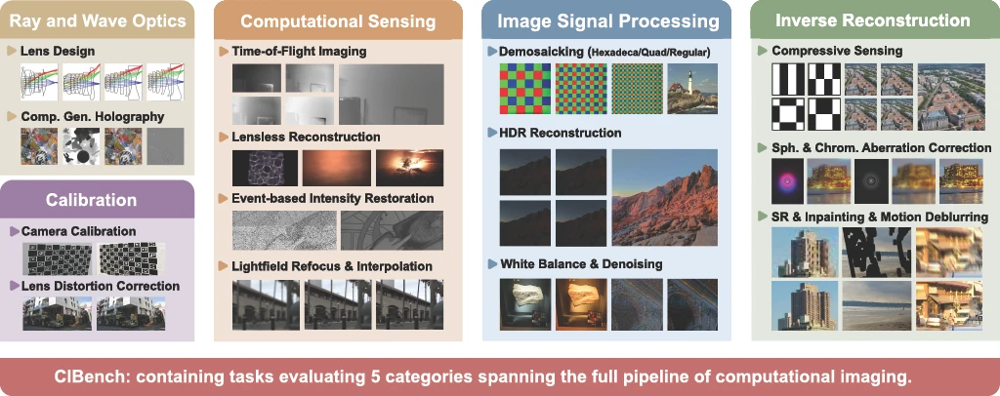

* Note: All benchmark results are preliminary and subject to change as evaluations scale and methodologies are refined.
Vision-Language Models (VLMs) and agentic AI have demonstrated impressive capabilities across semantic recognition, reasoning, and embodied decision-making tasks. However, their ability to reason about image formation, optical sensing, signal processing, and inverse problems, the core of computational imaging, remains largely unexplored.
In this paper, we present CIBench, the first systematic benchmark of latest VLMs and agentic AIs on a diverse set of computational imaging tasks, including inverse image reconstruction, camera parameter inference, and forward formation model reasoning. We evaluate leading proprietary and open-source agentic AI pipelines under both single-shot prompting (P1) and planner-guided prompting (P2), measuring image quality, physical plausibility, and sensitivity to noise and sampling.
Our benchmark reveals a clear performance gap between high-level visual reasoning and low-level imaging understanding: while AI excel at semantic interpretation, they are behind specialized non-agentic models on tasks requiring explicit physical reasoning and algorithmic insight. CIBench provides a unified testbed for measuring this gap and for tracking progress in agentic AI for computational imaging.
Ranked by Unified Score. Higher is better.
| Protocol | Model | Planner | Type | Unified ↕ | Ray/Wave ↕ | Calibration ↕ | Sensing ↕ | ISP ↕ | Inv Recon ↕ |
|---|
Unified Score = 0.3×norm(PSNR) + 0.3×norm(SSIM) + 0.3×norm(LPIPS) + 0.1×norm(NIQE).
* Note: This weighting scheme is subject to change and the underlying metrics may be updated.
* Note: Camera calibration scoring is temporarily excluded due to evaluation issues. The Calibration score currently reflects only Lens Distortion Correction results.
Real editing prompts, real model outputs. Each row shows the original input alongside predictions from different models.
* Note: Images shown are compressed to WebP for faster loading in the web interface.
While agentic models often generate visually plausible and aesthetically pleasing outputs (high NIQE), their reference-based fidelity (PSNR/SSIM) remains poor. Producing visually plausible edits is far easier than faithfully following the underlying physics of inverse reconstruction.
Agentic models are consistently weaker than specialized methods, especially on computational sensing problems such as lensless imaging, event-based reconstruction, time-of-flight imaging, and holography.
Incorporating frontier multimodal reasoning models (e.g., GPT-5, Gemini 3.1 Pro) as planners (P2) provides only modest and inconsistent gains over the fixed-prompt single-shot baseline (P1).
The preprint is currently under preparation. Citation information will be provided once published on arXiv.